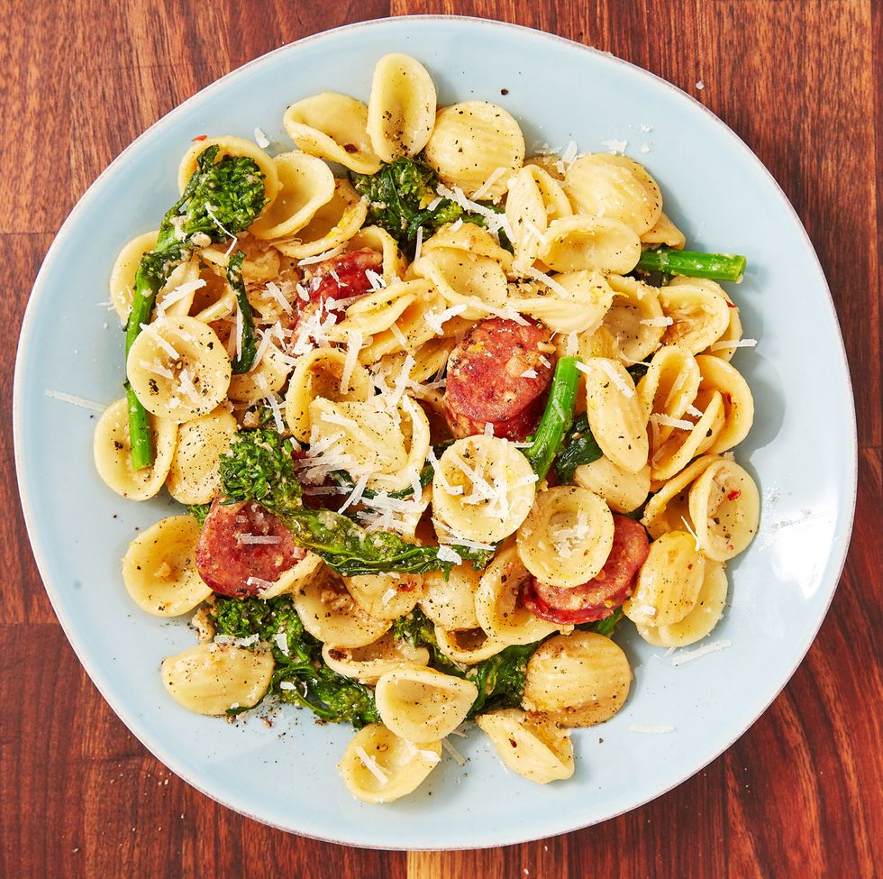

Orecchiette With Broccoli Rabe Recipe

Description:
Orecchiette, literally translating to "little ears" in Italian, is a
crazy-underrated and underutilized pasta in the home kitchen. The tiny
little indentations catch so much sauce! Here, the sauce is similar to
that of cacio e pepe. You just need butter, pasta water, pepper, and
cheese. Toasting the pepper in butter is key, folks. DO NOT skip it.
Ingredients:
- Kosher salt
- 12 oz. orecchiette
- 1 lb. broccoli rabe, trimmed and cut into 2" pieces
- 2 tbsp. extra-virgin olive oil
- 2 andouille sausage links (about 6 oz.), sliced into coins
- 3 tbsp. butter, divided
- 3 cloves garlic, minced
- Freshly ground black pepper
- 1 1/2 c. freshly grated Parmesan
- Zest and juice of 1 lemon
- Pinch crushed red pepper flakes
Steps:
-
In a large pot of boiling salted water, cook pasta until al dente
according to package directions. During the last 2 minutes, add broccoli
rabe and cook 1 minute. Reserve 1 cup pasta water, then drain pasta and
broccoli rabe together
-
In a large skillet over medium heat, heat oil. Add sausage and cook,
stirring occasionally, until warmed through and slightly golden, about 5
minutes. Add 1 tablespoon butter and garlic and season generously with
pepper. Cook until fragrant, 1 minute.
-
Add ½ cup reserved pasta water and bring to a simmer. Add remaining 2
tablespoons butter, broccoli rabe, and pasta and toss to combine
-
Add Parmesan, lemon zest and juice, and red pepper flakes. Toss
constantly to melt cheese, removing skillet from heat when about half
the cheese has melted. If sauce is still too thick, loosen with more
pasta water. Season with salt before serving.